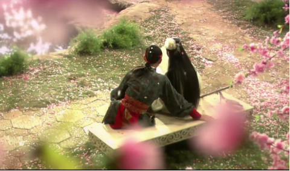
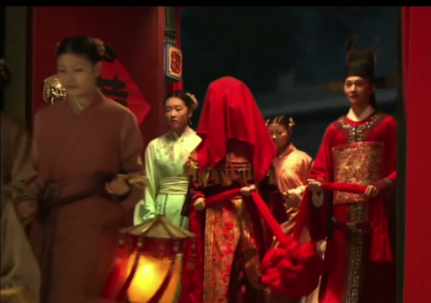

《红楼梦》中反复出现的葬花情节，到底是象征黛玉，还是象征宝玉？
红楼梦一书中具有深刻的象征性意义的情节很多，其中，葬花不可不提。黛玉心地良善，恋花惜草，又本性高洁，对于世间万物，求得不过是干净二字。为此，她做了一件很特别的事情，来抒发心志，就是将落花归冢。书中一共描写了三次葬花的场景，每一次在场之人、景、意都截然不同，非常值得再三品读。
第一次葬花发生在春暖花开的三月。桃花盛放，遍地落英，宝黛二人在逛园子的时候，都对花瓣随风落地后任人践踏的境地，感到不忍和怜惜。但是两人对于落花的处理方式却截然不同。宝玉一贯不分贵贱，他也不顾身上会沾染泥土，用自己的袍子兜起落花抖在池中，让花瓣随流水而去，让花儿回归大自然，可以说是文艺青年的典型做法。
黛玉则带来一套专门为了葬花制作的专业工具，包括锄头、绢袋、扫帚等等，毕竟小女生都需要仪式感。用了这一套物事，她再把花瓣收集在一起，用绢袋装好埋在土里，为它做一个埋香冢，这事儿才算做到了极致。
黛玉前生就是一株仙草，她葬花之举有着对自我情怀的寄托，而宝玉前生则是灌溉仙草的护花人，他做这等怜香惜玉之举，实在是出自本心。两个人恰好遇见对方，不约而同做着这样风雅的事情，不禁觉得眼前这个人实在太懂自己了，不愧是这世间难得的知己。在这飞花满天、共读西厢的日子里，两人情窦初开，开始互相试探和表明心意。

第二次葬花发生在芒种之时，正是黛玉去找宝玉却吃了闭门羹，对他产生误会的第二天。古来芒种要祭拜花神，黛玉来到两人曾经一起埋葬落花的地方，睹景思人，黯然神伤。当时心心相惜的情景还历历在目，却已经时过境迁。春光早已消逝，就如同生命中美好的时光，统统一去不返。
黛玉深感凄凉，她孤身一人来到这锦绣堆中，没有办法掌握自己的命运和婚姻，只能冀望于宝玉的真心，可是这真心又显得难以依靠，让她看不到自己的前程会落在何地。她深怕自己也会像那落花一样，缥缈不知去处，做出了催人泪下的葬花吟。
恰在此时，宝玉也兜了落花来到埋香冢，无意间听闻葬花吟之后，这个世间少有的痴心人由景推人，也深深地为黛玉和诸位姐妹未知的将来而感到恐惧和悲伤，这正是他怜花人的本性体现。
第三次则是在宝玉生日这天，正值清明，宝玉将象征着夫妻的并蒂莲埋入花冢，其实这个情节蕴含着极其深长的意味。当晚大观园中群芳设宴，姑娘们在行酒令时，每个人都抽到了一种代表自己的花卉。她们击节而歌，对花畅饮，欢声笑语，难得的放松，难得的肆意。
正是这美妙的夜宴过后，四府盛极而衰，情势急转直下，大观园中渐渐从群芳争艳变成了朱颜凋零，宝黛之间真挚纯洁的爱情，也没能逃过命运之手的捉弄，就像那朵被埋葬的并蒂莲一样，只能在泥土中腐坏、消逝。黛玉凄然而终的那天，她的亲人们正在举办一场喜事。她的知己不知自己受骗，还在为终于能得偿所愿而喜出望外。两个人都没能见到对方最后一面，实在是可怜、可恨、可叹。
三次葬花，暗合情节发展的三个阶段，承上启下如云流水，将主角的性情和故事的脉络描写得一清二楚，让读者如见真人，如临其境。
小编认为，曹公之所以会反复描写这个情节，正是通过此举，来体现两人在情感上的默契和思想上的差异，也是用此节，隐射书中人物如落花般不受掌控的悲惨命运。黛玉葬花是为自哀自怜，是少女对逝去生命的惋惜，和对美好明天的憧憬。宝玉葬花则是为怜惜旁人，是少年对美好事物的爱惜，和对心上之人的爱护。

然而黛玉命途的走向正如她葬下的落花一般，无可奈何花落去，再也无法返回枝头。她对于爱情的憧憬统统被击成齑粉，唯有一个愿望实现了，就是干净的来，也干净的去。宝玉则始终是那个看着落花随流水而去的旁观者，他无法保护自己心爱之人，甚至成为了伤害她的原因之一。伴随着爱情的逝去，他生命中所有美好的东西就此逐一败落，悲惨的现实击穿了他脆弱的心灵，也最终毁灭了他的精神。